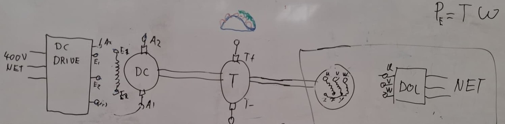
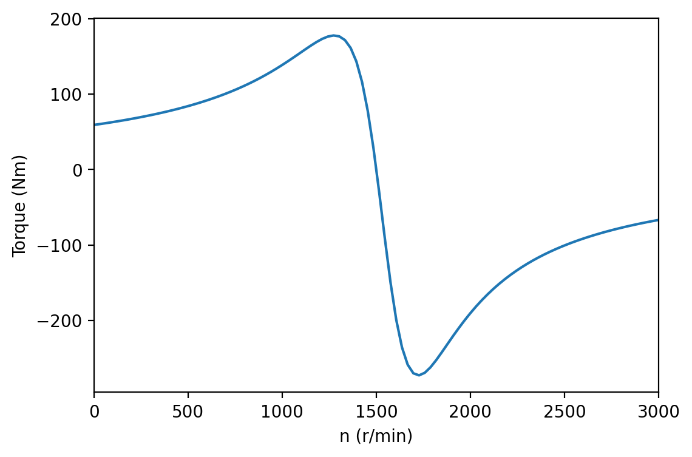
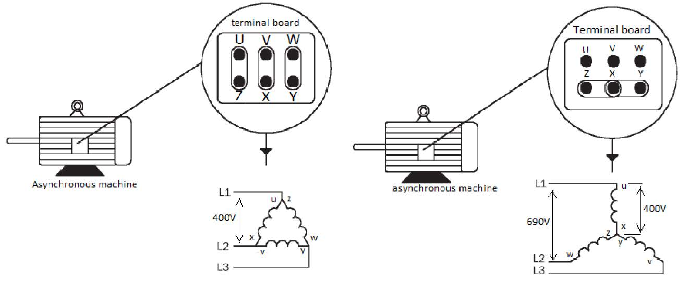

EE1E1 course lab onsite version: electric drives
Introduction
In this experiment you are going to experience the behaviour of real-life induction and DC machines and measure (a part of) the torque-speed characteristic of the induction machine. We use the term induction machine in this manual. In the circuit diagrams, it may also be called an asynchronous machine. They are the same machine.
Before you are allowed to do the lab work, you have to study the experiment procedures and the theory behind the experiments. After doing the lab work, you have to analyze the measured results, calculate and plot the theoretical torque-speed characteristic of the induction machine, then compare the measured results with the theoretical results. A report has to be be written and submitted to complete the lab work.
The deliverable of this module will be a course lab report as per requirements given in the manual.
Introduction to the setup
Please read
- Chapter 14, section 14.1, 14.2, 14.3 and 14.5 of the book Electric Power Principles: sources, conversion, distribution and use.
- Theoretical background section of this manual.
In this experiment, a DC machine is coupled to an induction machine and a synchronous machine on a common shaft. The synchronous machine is not used during this practical. It is included only in the master version of the course and is therefore not shown in the top-level image shown in . The shaft speed is measured using a DC tachometer. The DC machine is connected to the Siemens drive, which is supplied from the grid. The induction machine is connected directly to the grid using a Direct-On-Line (DOL) starter.

The per-phase equivalent circuit parameters of the induction machine is shown in Table 1.
| Parameters | Value |
|---|---|
| Stator resistance (rs) | 9.020 Ω |
| Rotor resistance (rr) | 6.648 Ω |
| Stator inductance (Ls) | 54.749 mH |
| Rotor inductance (Lr) | 2.083 mH |
| Magnetization inductance (Lm) | 1.043 H |
During the Lab Session
You can follow these guidelines to complete the measurements:
- Take a photo of the nameplate of the induction machine and write down the nameplate data of it (Brand, Type, Nominal stator phase voltage, etc.).
- We want to connect the induction machine to the grid. Using the nameplate data, determine whether the induction machine should be connected in Y or Δ. Hint: This is grid voltage and frequency dependent.
- Using either a Y or Δ configuration, draw and connect the asynchronous circuit with the required wiring.
- Connect the induction machine to the grid using the DOL (direct-on-line) switch.
- Connect the Chauvin Arnoux F607 power meter to measure voltage, current, and power. Refer to the laminated wiring diagram and pay attention to the current direction arrow. The manual can be found in .
- Have the wiring checked before continuing.
- Start the induction machine and record measurements using the power meter. What do you observe about real and reactive power?
- Turn off the induction machine and the power to the table.
- Connect the DC machine to the Siemens DC converter. Connect the rotor connections A1 and A2 and the field connections E1 and E2 of the DC machine to the A1 and A2 and E1 and E2 connections of the drive. Connect the T+ and T− connections of the tacho to the T+ and T− connections of the Siemens DC converter.
- Using 2 multimeters, place a DC ammeter in series between the rotor armature and the DC drive circuit, and a DC voltmeter in parallel across the armature winding.
- Use the DC tachometer mounted on the shaft to measure the shaft speed. Connect a DC voltmeter in parallel to the tachometer output. The voltmeter reading tells you how fast the shaft is rotating, and the polarity of the voltage tells you the direction of rotation.
- Draw the schematic of the setup with all the instruments and wires. Show your schematic and setup to the TA consultant before turning on the machines.
- Start the DC machine and adjust it to reach 1500 RPM (use the tachometer ratio from your table to find the correct corresponding voltage).
- Turn off the power to the setup.
- Find the instructor or TA to explain the next part.
- Spin the induction machine and note the direction of rotation using the tachometer voltage.
- Use the stroboscope to achieve 1500 RPM. Once achieved, turn on the induction machine to establish your first setpoint.
- Fill in the values in Table 2. The values of cosφ and torque T can be calculated at home. The torque T can be calculated using \eqref{eq:T_mec}, assuming \( P_{el} = P_{mech} \).
- Find the instructor or TA to explain the next part.
- With both machines running, vary IDC from −5 A to 5 A in steps of 1 A using the potentiometer. Record all values in Table 2.
- Once all measurements have been recorded, return the DC machine to the 1500 rpm setpoint. Switch off the induction machine, then the DC machine, and finally the power to the table.
- Clean up the workstation and return all wiring and multimeters.
- End of experiment.
Before the Introduction Explanation
Wiring and operation only the induction machine
Wiring and operation of the DC machine
Spinning both machines at synchronous speed
Use the DC machine to drive the induction machine
| CALCULATE | MEASURE | MEASURE (1x) | MEASURE | CALCULATE | ||||||
|---|---|---|---|---|---|---|---|---|---|---|
| n (rpm) | U tacho(V) | IDC Armature (A) | UDC Armature (V) | UL12 (V) Do this once | P (W) | Q (var) | S (VA) | cos(φ) | T (Nm) | |
In the table, Utacho is the reading from the tacho, from which the rotational speed n can be identified using the ratio shown on your specific table. IDC is the measured DC armature current, UL12 is the measured line-line voltage between phase 1 and 2, IL3 is the measured line current of phase 3. P, Q and S are the readings of the real power, reactive power and apparent power from the power meter, from which the power factor cos (φ) can be calculated. The torque of the induction machine T can be obtained from the measured input power P, the line current IL3, phase resistance rs and the synchronous speed ns using the method shown in the theoretical background section of the manual.
Report deliverables
After the measurements are completed, please write a report including the following content:
- A schematic showing the measurement setup, with multimeters and wiring.
- Choice of the induction machine wiring configuration (Δ or Y), and give the motivation.
- A theoretical torque-speed curve of an induction machine calculated based on the equivalent circuit parameters shown in Table 1.
- A table summarising all the measured and calculated data points (an example shown in Table 2).
- Measured torque-speed points derived from the measurements.
- Comparison between the theoretical torque-speed curve and the measured points (plot both in one graph).
- Causes of mismatch between the theoretical curve and measured points, if there are any.
Theoretical background: induction machine
Grid connection
By neglecting the core loss, the equivalent circuit of the induction machine is shown in . There are 5 elements in the circuit: the stator resistance rs, the stator leakage reactance Xs, the magnetizing reactance Xm, the rotor leakage reactance Xr, and the rotor resistance rr. The slip s is calculated from the synchronous speed ns and the mechanical speed n:
Connecting an induction machine is more complicated than plugging the electrical cord. As can be seen from , when the induction machine starts, the slip \( s = 1 \). Therefore, the rotor impedance is very low, which results in a high starting current even if there is no load. To protect the machine and the grid from overload or overcurrent, a direct-on-line (DOL) starter is often used. It connects the induction machine directly to the power grid via a three-phase contactor. Inside the starter, there are also overcurrent and overload protections connected in series with the contactor, as shown in .
Torque-speed characteristic
The performance of the induction machine can be calculated from its equivalent circuit in . Once the frequency, phase voltage, and the resistances/inductances are known, the stator and rotor impedances and currents can be calculated at each slip. The air-gap power Pag and the mechanical power Pmec are calculated as:
where \( P_{in} = 3\Re(\mathbf{V}_s \mathbf{I}_s^*) \) is the input power, \( \mathbf{V}_s \) is the stator phase voltage phasor, \( \mathbf{I}_s \) and \( \mathbf{I}_r \) are the phase stator current and rotor current phasors respectively.
When \( s = 0 \), the electromagnetic torque becomes 0 since it is corresponding to the no-load condition.
The electromagnetic torque T can be calculated from either the air-gap power or the mechanical power by
By substituting s, ns and n into the equations above, the torque at different mechanical speed can be calculated. Therefore, a torque-speed characteristics curve can be plotted. The code below shows the torque-speed curve of a typical 4-pole induction machine. As we can see, the torque changes from positive to negative at the synchronous speed 1500 r/min. Similarly, the torque at specific test speed can be obtained from the measured input power to the machine, measured phase current and synchronous speed from \eqref{eq:Pag} and \eqref{eq:T_ag}.
The following Python code calculates and plots the torque-speed characteristic:
import numpy as np
import matplotlib.pyplot as plt
plt.rcParams['figure.figsize'] = [6, 4]
plt.rcParams['figure.dpi'] = 200
# IM: 400 V, 4-pole, 50 Hz, Y connected
Ls = 4.138e-3
rs = 0.5
rr = 0.35
Lr = 3.183e-3
Lm = 1.114
f = 50
Vll= 400.0
p = 2 # 4-pole
Xs = 2*np.pi*f*Ls
Xr = 2*np.pi*f*Lr
Xm = 2*np.pi*f*Lm
Vph = Vll/np.sqrt(3) # Y connected
ns = 60*f/p # synchronous speed (rpm)
n = np.linspace(0, 3000, 100)
s = (ns-n)/ns
Zr = np.divide(rr,s) + 1j*Xr
Zm = 1/(1/(1j*Xm)+1/Zr)
Ztot = Zm + rs + 1j*Xs
Is = Vph/Ztot
Pin = 3*np.real(Vph*np.conj(Is))
Pag = Pin - 3*np.absolute(Is)**2*rs
T = Pag/(ns/60*2*np.pi)
plt.plot(n, T)
plt.xlabel('n (r/min)')
plt.ylabel('Torque (Nm)')
plt.xlim([0, 3000])
plt.savefig('../Pictures/torque_speed.png', dpi=200, bbox_inches='tight')
plt.show()
Extra
Winding connection induction machine
The winding of the three-phase induction machine can be wired in different ways, as shown in Figure . Depending on whether the winding is connected in Δ or Y, the induction machine will have different rated voltage and current when connected to the three-phase power grid. However, the rated power remains the same.

Power Clamp Manual
The power clamp manual is shown below: